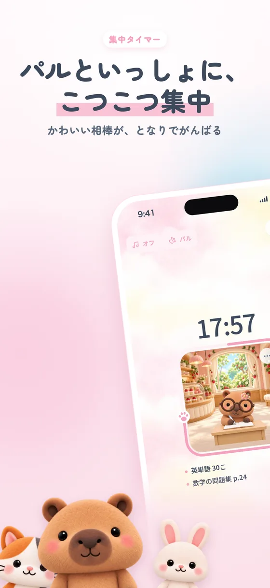
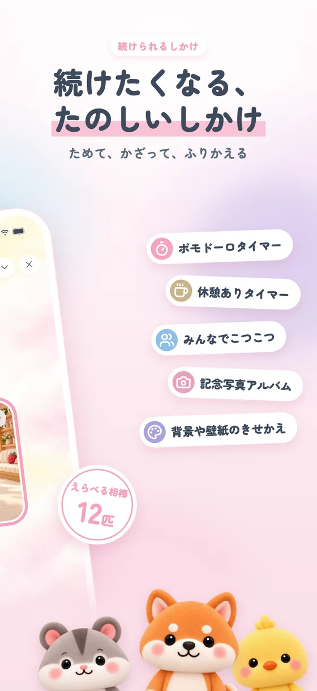
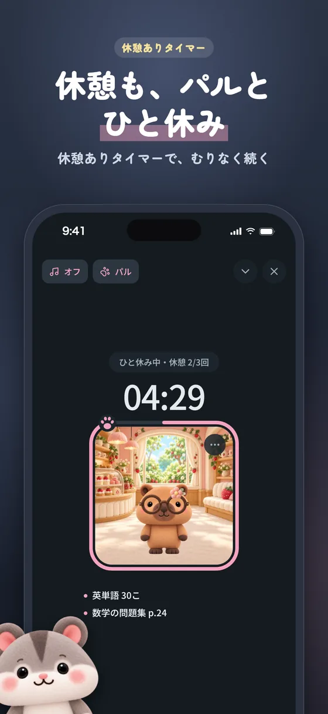
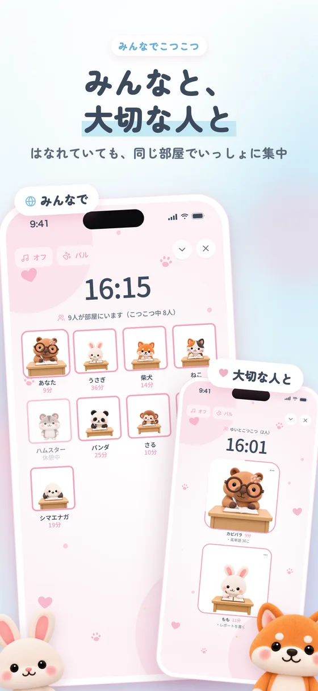
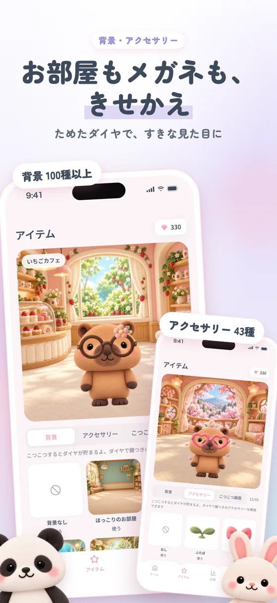
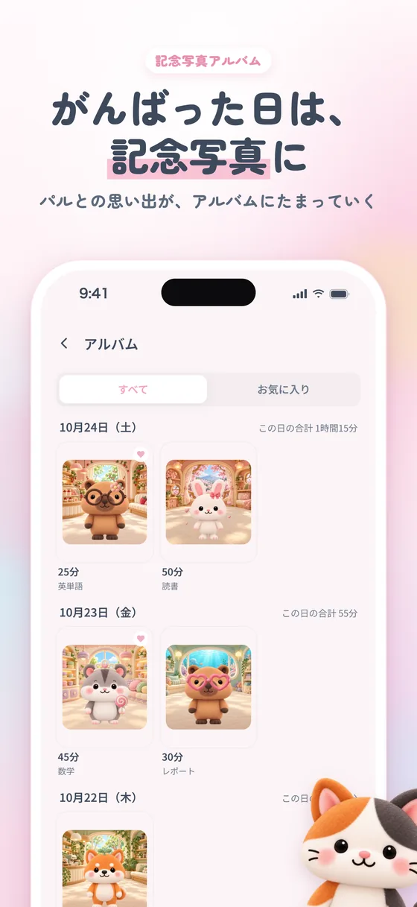
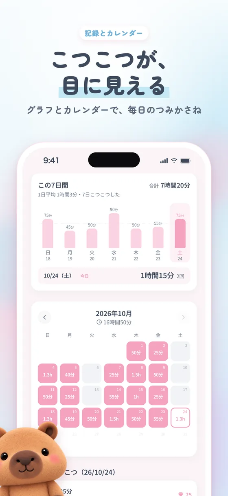

どうぶつと一緒の集中タイマー
パルといっしょに、
こつこつ集中
ほのぼのした動物の「パル」が、となりで一緒にがんばるフォーカスタイマー。勉強や仕事の時間が、ちょっとたのしみになります。
- iPhone
- iPad
- Mac
- えらべる相棒 12匹

SCREENSHOTS
アプリの画面







FEATURES
わくパルでできること
こつこつ続けるほど、仲間や場所が増えていきます。
パルといっしょに、こつこつ
ポモドーロも、自由な時間も。こつこつ中は、えらんだパルがとなりで勉強や仕事をしています。
休憩も、パルとひと休み
休憩ありタイマーで、集中と休憩を自動でくり返し。むりなく続けられます。
みんなで・大切な人と
はなれていても、同じ部屋でいっしょに集中。友だちや家族とは、招待コードで同じ部屋に入れます。
背景やメガネで、きせかえ
こつこつでためたダイヤで、お部屋の背景やアクセサリーを解放。100種類以上から選べます。
がんばった日は、記念写真に
こつこつが終わるたびに、パルとの記念写真がアルバムにたまっていきます。
こつこつが、目に見える
グラフとカレンダーで、毎日のつみかさねをふり返り。続いた日数もひと目でわかります。
FAQ
よくある質問
アカウントの登録は必要ですか？
必要ありません。アプリを入れたらすぐに使えます。初めて開いたとき、アカウントの登録・ログイン（メールアドレスとパスワード、または Apple）をするか、登録せずに使うかを選べます。登録しなくても今までどおり使えます（その場合は、端末ごとの匿名のアカウントが自動で作られます）。登録しておくと、データを残して機種変更で引き継げます。
データはどこに保存されますか？
こつこつの記録、メモ、写真、設定などは、お使いの端末の中にだけ保存されます。ダイヤの残高、購入の記録、解放したアイテムは、運営者のサーバーでも管理しています（詳しくはプライバシーポリシーをご覧ください）。アカウントの登録・ログインをした場合は、端末のデータ（写真を除く）もサーバーに保存します。ログインしていないと、アプリを削除したときに端末のデータは消え、購入したダイヤも引き継げません。
ダイヤは購入できますか？
はい。ホーム画面・記録画面・アイテム画面の右上のダイヤの数をタップするか、アイテムの解放の確認画面にある買い物アイコン（ダイヤが足りないときは「ダイヤを買う」ボタン）から、App Store のアプリ内課金でダイヤを購入できます。購入しなくても、こつこつして貯められます。返金は Apple の定めに従います。
機種変更のときにデータを引き継げますか？
アプリの「設定」→「データの保存」でログインしておくと、新しい端末で同じアカウントでログインすれば、こつこつの記録もダイヤも引き継げます（記念写真は引き継げません）。ログインせずに使っている場合は引き継げません。
広告は表示されますか？
「広告を見て」のボタンを押したときだけ、動画広告が流れます。最後まで見ると、追加でダイヤがもらえます。広告を見なくても、すべての機能を使えます。
音が鳴りません。
端末の音量と、アプリの「設定」→「効果音」がオンになっているかをご確認ください。こつこつ中の BGM は、こつこつ画面の左上から選べます。
解決しないときは
ご意見・ご要望や不具合のご報告は、お問い合わせページからお送りください。